SqueezeNet Paper Explained: A Deep Dive into 50x Smaller, AlexNet-Level AI
Introduction
If you were involved in the world of AI and deep learning around 2015, you’d know one mantra ruled them all: bigger is better. The race to conquer computer vision benchmarks like ImageNet was a horsepower competition. Researchers were building deeper, wider, and more complex Convolutional Neural Networks (CNNs), like the famous VGGNet (VGG16), which had a staggering 138 million parameters. These massive models were breaking accuracy records, but they came with a hefty price tag. They were slow to train, expensive to store, and nearly impossible to run on anything but a powerful server with high-end GPUs.
Then, in 2016, a paper from researchers at Berkeley and Stanford turned this idea on its head. Titled “SqueezeNet: AlexNet-level accuracy with 50x fewer parameters and <0.5MB model size”, it wasn’t just another incremental improvement. It was a radical rethinking of what a neural network could be.
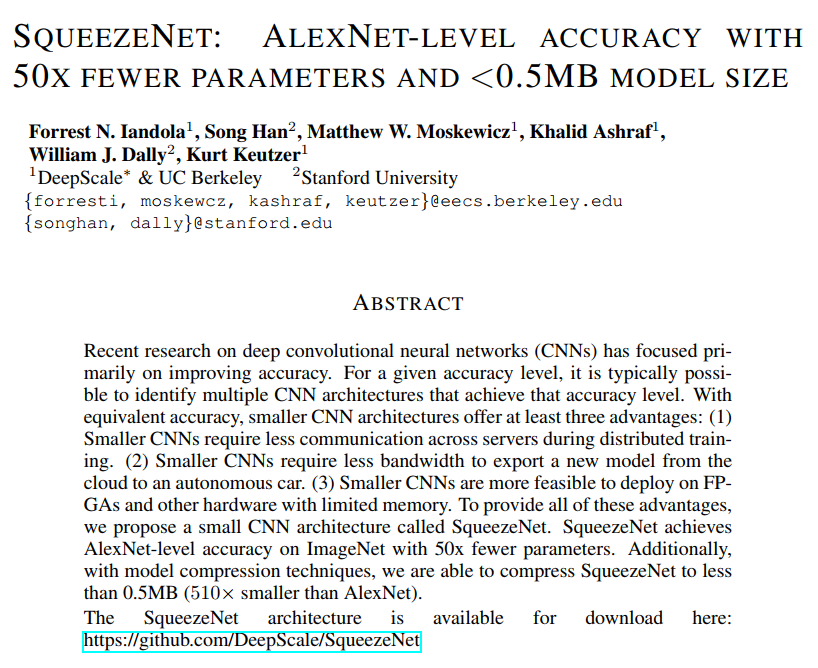
The authors posed a simple but revolutionary question: Instead of just pushing for higher accuracy, what if we could achieve the same industry-standard accuracy with a model that was drastically more efficient?
This is the story of SqueezeNet. It’s the story of how a small, intelligently designed architecture not only matched the performance of the legendary AlexNet (the model that kickstarted the deep learning revolution) but did so with 50 times fewer parameters. And if that wasn’t enough, they showed that with modern compression techniques, their model could be shrunk to be 510 times smaller than AlexNet—weighing in at less than 0.5 megabytes. That’s small enough to fit on even the most constrained microcontrollers.
In this post, we’re going to take a deep dive into the SqueezeNet paper, page by page. We’ll unpack the core ideas, understand the brilliant design choices, and see the results that made this paper a landmark in the field of efficient AI. Whether you’re a student, a practitioner, or just curious about how AI models work under the hood, this breakdown will give you a clear, step-by-step understanding of this tiny giant.
Here’s what we’ll cover:
- First, we’ll explore the motivation behind the paper: why small models are a really big deal for real-world applications.
- Next, we’ll break down the three secret ingredients in SqueezeNet’s design recipe that make it so incredibly parameter-efficient.
- We’ll then meet the “Fire module,” the clever building block that powers the entire network.
- Finally, we’ll look at the jaw-dropping results and the scientific experiments the authors ran to prove their ideas and provide timeless lessons for anyone building AI models today.
Let’s get started.
Why Small Models are a Big Deal
Before we dive into the technical brilliance of how SqueezeNet was built, let’s start with the fundamental question the authors address on the very first page: Why should we even care about making models smaller? If we can get high accuracy with a big model, isn’t that good enough?
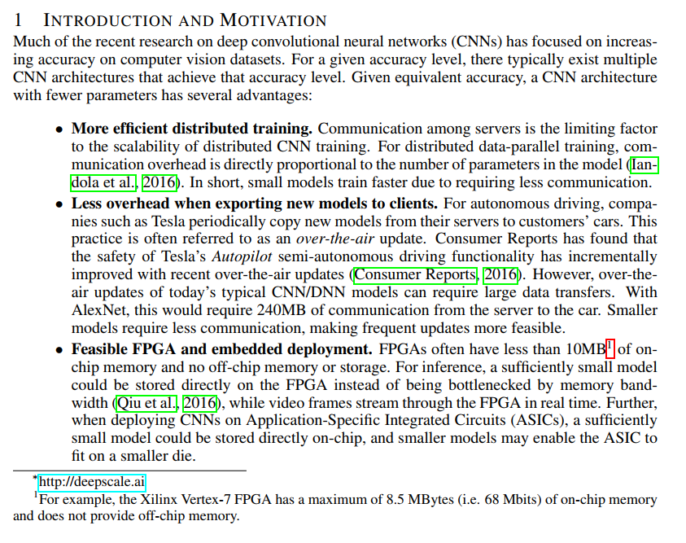
As it turns out, model size isn’t just an academic curiosity; it’s one of the biggest roadblocks to deploying AI in the real world. The SqueezeNet paper lays out three compelling, practical reasons why smaller is better.
1. More Efficient Distributed Training
Training a state-of-the-art deep learning model on a massive dataset like ImageNet can take days or even weeks on a single machine. To speed this up, companies use “distributed training,” where the workload is split across multiple servers. In the most common setup (called data-parallel training), each server gets a copy of the model and a different chunk of the data. After processing its data, each server needs to communicate its learnings (the updated model parameters) to all the other servers so they can sync up and stay consistent.
This communication step is often the bottleneck that limits how fast you can train. The amount of data that needs to be sent is directly proportional to the number of parameters in the model.
- A big model like AlexNet: has ~60 million parameters. At 4 bytes per parameter (a 32-bit float), that’s 240MB of data that needs to be communicated across the network at every single training step.
- A small model like SqueezeNet: has only ~1.2 million parameters, which is just 4.8MB of data.
By requiring less communication, smaller models train significantly faster in a distributed environment, saving both time and money.
2. Less Overhead for “Over-the-Air” Updates
Imagine you’re an engineer at a company like Tesla. You’ve just improved the self-driving algorithm, and you need to push this new model out to every car on the road. This is called an “over-the-air” (OTA) update.
If your model is the 240MB AlexNet, you have to send a quarter-gigabyte file over a cellular connection to hundreds of thousands of vehicles. This is slow, expensive (in terms of data costs), and can be unreliable. It limits how often you can send out safety improvements.
Now, imagine your model is the <1MB compressed SqueezeNet. The update is tiny. You can push it out quickly, cheaply, and frequently, ensuring your entire fleet is always running the latest and safest software. This isn’t just a convenience; as the paper notes, the safety of Tesla’s Autopilot has been shown to improve with these incremental updates.
3. Feasible Deployment on Edge Devices (The Embedded World)
This is perhaps the most critical advantage. The future of AI isn’t just in the cloud; it’s on the “edge”—the billions of small devices that surround us, like our smartphones, smart cameras, drones, and industrial sensors. These devices have a very strict power and memory budget.
The paper gives the example of an FPGA (Field-Programmable Gate Array), a type of customizable chip often used in embedded systems. These chips are great for high-speed processing but often have very little on-chip memory (e.g., less than 10MB) and no way to access slower, off-chip memory.
- A 240MB model is a non-starter. It simply will not fit.
- A <1MB SqueezeNet model, however, can be stored entirely within the FPGA’s fast on-chip memory. This eliminates the single biggest bottleneck in embedded AI: the slow, power-draining process of fetching model weights from external memory. This allows the device to process data (like a video stream) in real-time with very low latency and power consumption.
By making on-device AI feasible, small models unlock a world of applications that are simply impossible with their larger counterparts. And with these powerful motivations in mind, we’re now ready to see exactly how the SqueezeNet authors pulled it off.
The Building Blocks - What Inspired SqueezeNet?
Before the SqueezeNet authors could build their revolutionary architecture, they stood on the shoulders of giants. On page 2 of the paper, they review the “Related Work” — the key ideas and trends in the field that set the stage for their breakthrough. Understanding this context helps us appreciate why SqueezeNet’s design choices were so clever and timely.
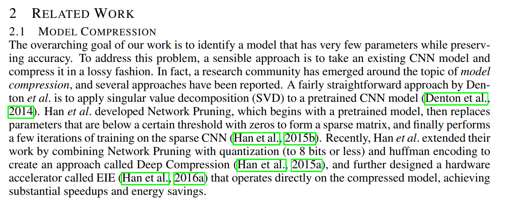
Approach #1: Compressing a Big Model
As we discussed, the dominant approach to getting a smaller model was to take a pre-trained behemoth like AlexNet and shrink it. The paper highlights a few popular techniques:
- Pruning: Imagine that many of the connections in a trained network are redundant or useless (their weight value is close to zero). Network Pruning, pioneered by SqueezeNet author Song Han, simply removes these weak connections, creating a “sparse” model that has fewer parameters to store.
- Quantization: Instead of storing each number (or “weight”) in the model as a high-precision 32-bit floating-point number, quantization reduces their precision to 8-bit integers or even less. This dramatically reduces the file size.
- Deep Compression: This was the state-of-the-art technique at the time, also from Song Han’s group. It’s a powerful three-step pipeline: Prune the network, Quantize the remaining weights, and then use standard Huffman encoding (like a
.zipfile) for even more compression.
The key takeaway here is that SqueezeNet was entering a world that was already very good at model compression. This sets a high bar and makes SqueezeNet’s “small architecture” approach even more impressive.
Approach #2: Designing a Better Architecture
The authors also drew inspiration from new ideas in how to design the networks themselves. They break this down into two key concepts:
1. CNN Microarchitecture (The Design of a Single LEGO Brick)
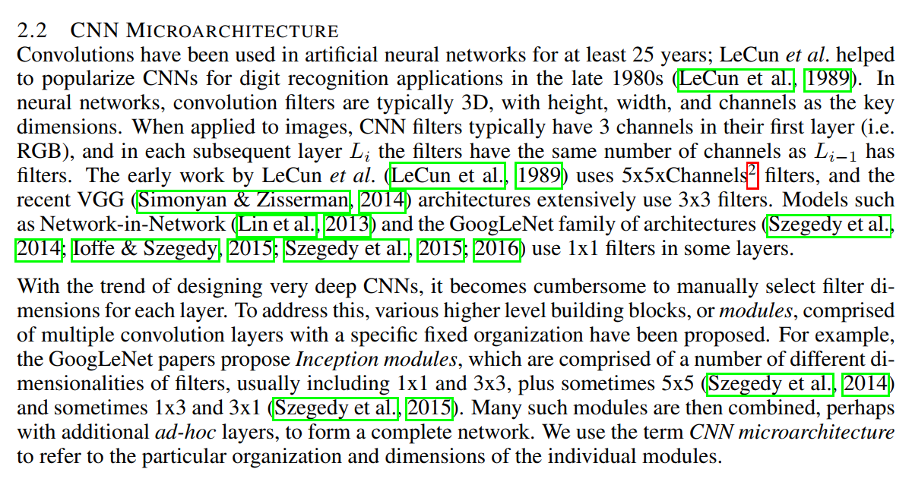
This refers to the design of a single layer or a small, repeating block of layers. The paper traces a fascinating historical trend in the size of convolution filters:
- Early Days (LeNet): Used 5x5 filters.
- The Deep Era (VGG): Standardized on 3x3 filters, showing that stacking smaller filters was more efficient.
- The Efficient Era (GoogLeNet, Network-in-Network): Introduced the powerful 1x1 filter. While it can’t see spatial patterns, the 1x1 filter is incredibly efficient at processing information across the channels of a feature map.
This trend toward smaller, more efficient filters, especially the 1x1 filter, is a massive clue to SqueezeNet’s design. They also note that modern networks like GoogLeNet were moving away from simple layers and toward complex “modules” (like the Inception module) as the main building blocks. SqueezeNet would follow this path by designing its own unique module.
2. CNN Macroarchitecture (How You Stack the LEGOs)
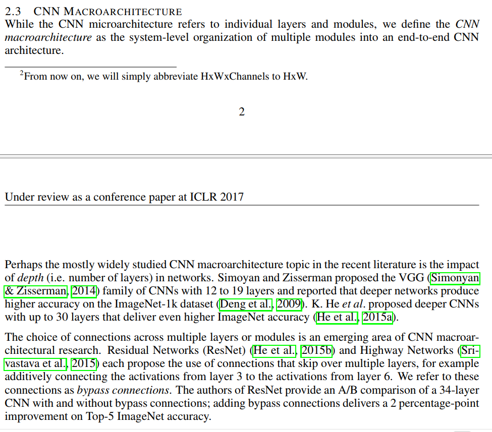
This refers to the high-level, end-to-end structure of the entire network. The big topics of discussion here were:
- Network Depth: How many layers should you have? Researchers were showing that deeper networks (like VGG and later ResNet) could achieve higher accuracy.
- Connections: Do layers always have to follow a simple sequence? The groundbreaking ResNet paper introduced “bypass” or “skip” connections, which allowed information to skip over several layers. This helped very deep networks train more effectively and achieve even higher accuracy.
SqueezeNet’s design would incorporate lessons from both of these areas, and as we’ll see later in the experiments, the idea of bypass connections would prove to be especially powerful.
With this background in mind—a world focused on compressing big models and experimenting with new micro- and macro-architectures—we’re now ready to see how the SqueezeNet authors combined these ideas into their three secret strategies.
A Note on “Design Space Exploration”
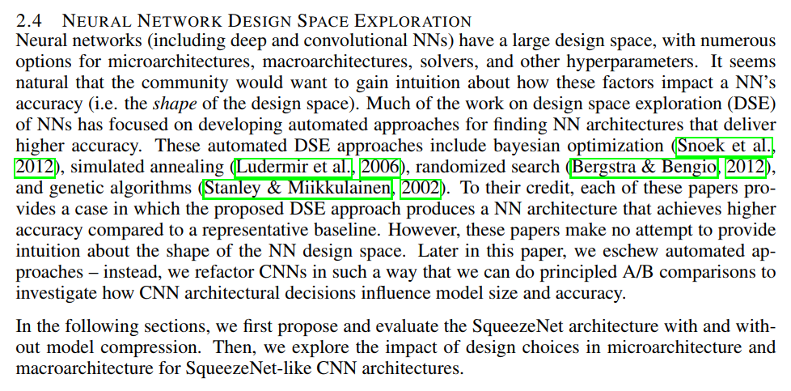
Before they unveil their own design strategies, the authors make one final and important point about how they approached the problem of designing a new network.
The universe of all possible neural network architectures is unimaginably vast. You have countless choices for the number of layers, the size of filters, the connections between them, and dozens of other hyperparameters. This vast universe of possibilities is what researchers call the “design space.”
The authors point out that a lot of research at the time focused on automated approaches to search this space. These techniques use algorithms to try and automatically “discover” a network that delivers the highest possible accuracy. Some popular methods included:
- Randomized Search: Literally trying random combinations of hyperparameters.
- Bayesian Optimization: A smarter search method that builds a model of the design space to guide its search toward more promising areas.
- Genetic Algorithms: An approach inspired by evolution, where architectures are “bred” and “mutated” over generations to produce better-performing offspring.
While these automated methods are powerful for finding a single, high-accuracy model, the SqueezeNet authors note a key drawback: they don’t provide much intuition. You get a final answer, but you don’t necessarily understand why that architecture works well or what general principles you can learn from it.
SqueezeNet’s Approach: Principled and Systematic Exploration
The authors deliberately choose a different path. Instead of using an automated black-box search, they propose a more disciplined, scientific approach. Their goal isn’t just to find a good model, but to understand the principles that make a model good.
They state that in the later sections of the paper, they will:
“…refactor CNNs in such a way that we can do principled A/B comparisons to investigate how CNN architectural decisions influence model size and accuracy.”
This is a key philosophical point. They are setting themselves up not just as engineers building a product (SqueezeNet), but as scientists conducting experiments to understand the fundamental trade-offs in network design. This is what will allow them to derive general lessons, like the optimal Squeeze Ratio or the best mix of 1x1 and 3x3 filters, which are valuable insights for any network architect.
This commitment to understanding the why is what makes the SqueezeNet paper so influential and educational. And now, with the stage fully set, we’re ready to learn their three core strategies for doing just that.
The Secret Sauce - SqueezeNet’s 3 Core Design Strategies
Now we get to the heart of the matter. On page 3 of the paper, the authors lay out the blueprint for how they achieved their incredible results. They didn’t rely on a secret algorithm or a complex new type of layer. Instead, they used three elegant and intuitive design strategies to attack the parameter count at its source.
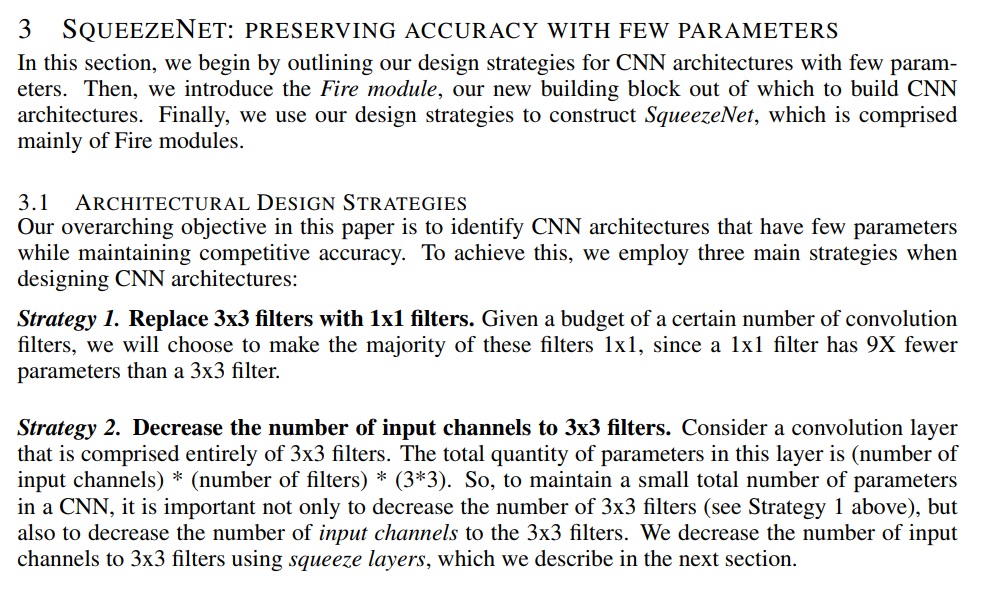
Their overarching objective is stated plainly: “to identify CNN architectures that have few parameters while maintaining competitive accuracy.”
Here’s the three-part recipe they developed to achieve this goal.
Strategy 1: Replace 3x3 filters with 1x1 filters.
This is the most direct way to cut down on parameters. As we learned from the related work, the 1x1 convolution was a powerful new tool, and the SqueezeNet authors decided to use it aggressively.
The logic is simple arithmetic. The number of parameters in a single filter is its height × width.
- A 3x3 filter has
3 * 3 = 9parameters. - A 1x1 filter has
1 * 1 = 1parameter.
This means a 1x1 filter is 9 times more parameter-efficient than a 3x3 filter. While you can’t replace all the 3x3 filters (you still need them to see spatial patterns), the strategy is to make the vast majority of filters in the network 1x1, saving a huge number of parameters.
Strategy 2: Decrease the number of input channels to 3x3 filters.
This strategy is the most clever and is the key to the “Squeeze” in SqueezeNet. The authors realized that the cost of a convolution layer doesn’t just depend on the filter size; it’s also directly multiplied by the number of channels coming into the layer.
The full formula for parameters in a layer is: (number of input channels) × (number of filters) × (filter size)
So, even if you are using “expensive” 3x3 filters, you can make them much cheaper if you can first reduce the number of input channels they have to process.
This is exactly what SqueezeNet does. It introduces a “squeeze layer” made of cheap 1x1 filters whose only job is to act as a channel-wise bottleneck. It takes a “thick” input with many channels and “squeezes” it down into a “thin” output with very few channels. Only then is this thin output fed to the 3x3 filters.
By protecting the expensive 3x3 filters with a cheap squeeze layer, they drastically reduce the total parameter count of the entire module.
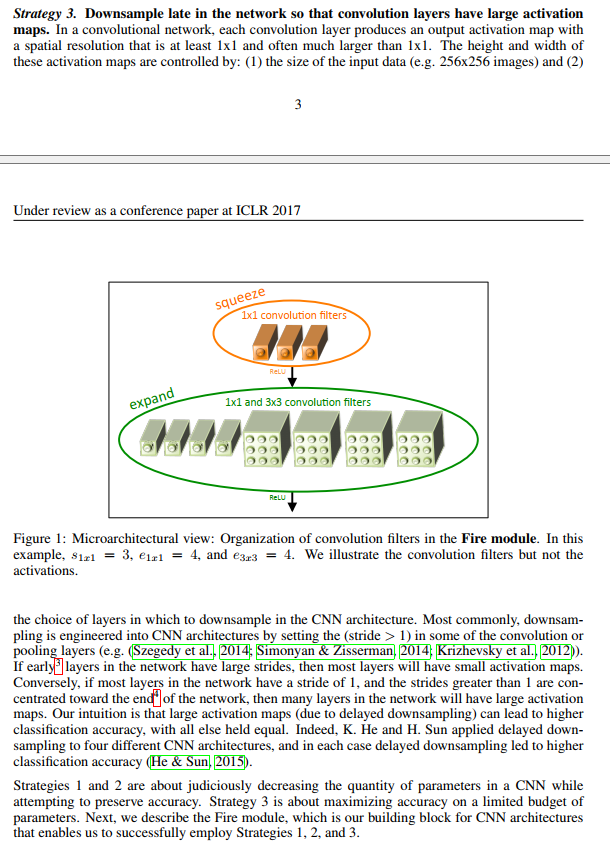
Below is an illustration of how a 1x1 Pointwise convolution layer can be used to reduce the number of input channels.
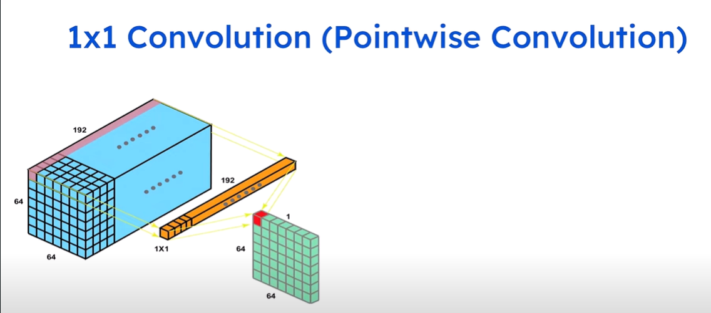
Strategy 3: Downsample late in the network.
The first two strategies are about reducing model size while preserving accuracy. This third strategy is about maximizing accuracy on a tight parameter budget.
In a CNN, “downsampling” (usually done with pooling layers) reduces the height and width of the feature maps.
- Early Downsampling: If you downsample early, the feature maps become small quickly. This is computationally cheap, but it means most of your layers are working with low-resolution information, which can make it hard to detect small objects and fine details, ultimately hurting accuracy.
- Late Downsampling: If you delay the downsampling and place the pooling layers toward the end of the network, most of your convolution layers get to operate on large, high-resolution feature maps.
The authors’ intuition, backed by other research, is that large activation maps lead to higher classification accuracy. The challenge, of course, is that operating on large maps is computationally expensive.
And now we can see how these three strategies brilliantly lock together:
- Strategy 3 says “keep the feature maps large” to boost accuracy.
- This choice makes the network very expensive, which forces them to be hyper-efficient with their parameters.
- Strategies 1 and 2 provide the tools (heavy use of 1x1 filters and squeeze layers) to manage this cost effectively.
These three principles form a complete and coherent design philosophy. Next, we’ll see how they are embodied in SqueezeNet’s custom building block: the Fire module.
Meet the “Fire Module” - The Engine of SqueezeNet
Theory and design principles are great, but how do you actually put them into practice? On the second half of page 3 and the top of page 4, the authors introduce the elegant building block that brings their strategies to life: the Fire module.
Think of the Fire module as SqueezeNet’s signature LEGO brick. The entire network is built by stacking these clever little modules on top of each other. It’s a beautiful piece of microarchitecture designed specifically to be lean and efficient.
Let’s look at its two-part structure, which directly implements Strategies 1 and 2.
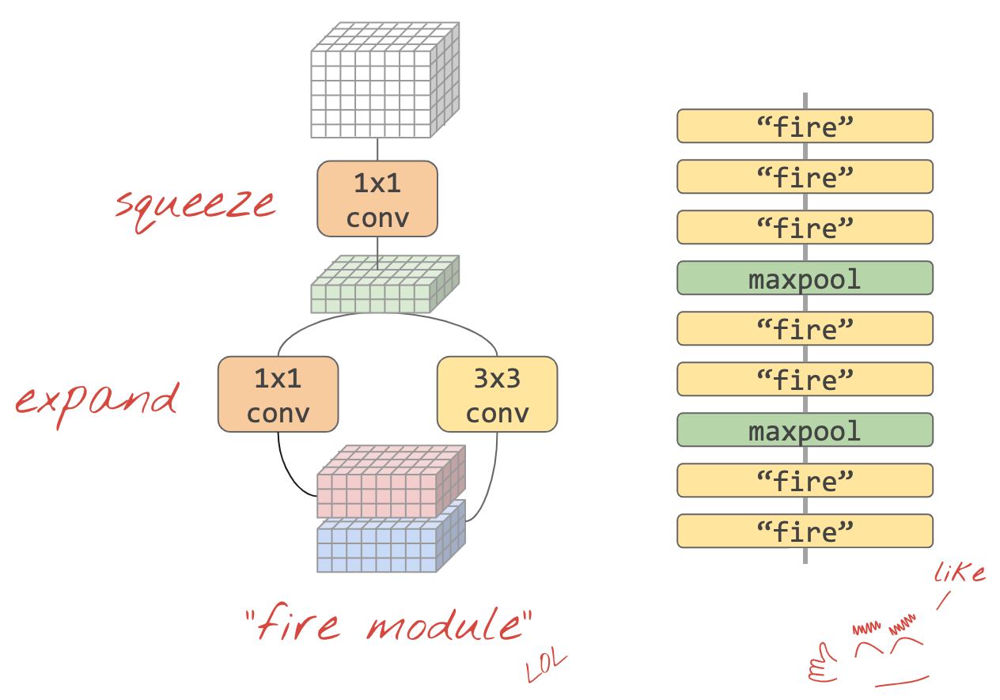
1. The squeeze Layer
The first part of the Fire module is a squeeze convolution layer.
- What it is: A simple convolution layer that contains only 1x1 filters.
- Its Purpose: To be a bottleneck. It takes the input, which might have a large number of channels, and “squeezes” it down to an intermediate feature map with a much smaller number of channels.
- This is Strategy #2 in action: Decrease the number of input channels to 3x3 filters. By putting this layer first, the Fire module ensures that the expensive 3x3 filters that come next will have far fewer input channels to process, saving a massive number of parameters.
2. The expand Layer
The second part of the Fire module is the expand layer. It takes the “thin” output from the squeeze layer and feeds it into two parallel sets of filters.
- What it is: A combination of both 1x1 filters and 3x3 filters. The outputs of these two sets of filters are then concatenated (stacked together) in the channel dimension to form the final output of the Fire module.
- Its Purpose: This is where the actual feature learning happens. The 3x3 filters can learn spatial patterns (like edges and textures), while the 1x1 filters learn to combine information across channels.
- This is Strategy #1 in action: The liberal use of 1x1 filters in the expand layer, working alongside the more traditional 3x3 filters, helps keep the parameter count low.
The Golden Rule of the Fire Module
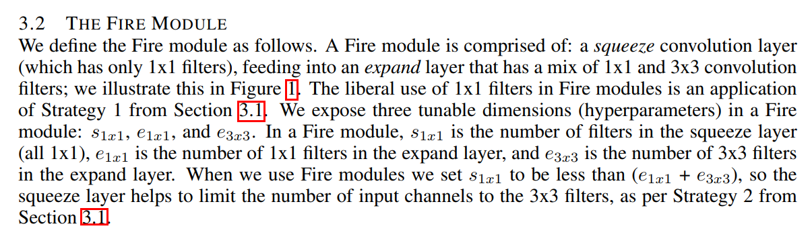
To ensure the squeeze layer always acts as a bottleneck, the authors define a crucial rule. If we let s_1x1 be the number of filters in the squeeze layer, and e_1x1 and e_3x3 be the number of 1x1 and 3x3 filters in the expand layer, then they always set:
s_1x1 < (e_1x1 + e_3x3)
This simple inequality guarantees that the number of channels is always reduced before being expanded again.
In the example shown in Figure 1, s_1x1 = 3, while e_1x1 = 4 and e_3x3 = 4. The total expand filters are 4 + 4 = 8. Since 3 < 8, the rule holds, and a bottleneck is successfully created.
This elegant two-part module is the workhorse of SqueezeNet. By combining a channel-reducing squeeze layer with a mixed-filter expand layer, it perfectly embodies the principles of a small-but-powerful architecture. Now, let’s see how these modules are stacked together to build the full network.
Assembling the Full SqueezeNet - From Modules to a Complete Network
Now that we have our custom LEGO brick—the Fire module—it’s time to build the spaceship. On pages 4 and 5, the authors describe the macroarchitecture of SqueezeNet: the high-level, end-to-end organization of the entire network.
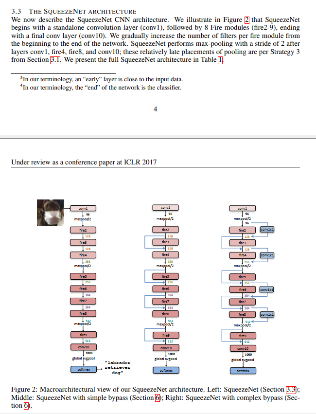
The diagram on the left of Figure 2 shows the complete, vanilla SqueezeNet. Let’s walk through its structure from input to output.
The High-Level Structure
The overall design is a clean, sequential stack of layers:
conv1: The network starts with a single, standard convolution layer. As we discussed, this is a common best practice. It takes the raw224x224x3image and performs an initial round of feature extraction and downsampling, preparing the data for the main body of the network.fire2tofire9: The core of the network consists of 8 Fire modules, stacked one after another. This is where the bulk of the computation and feature learning happens.conv10: The network ends with a final 1x1 convolution layer that acts as the classifier. It has 1000 filters, one for each class in the ImageNet dataset.global avgpoolandsoftmax: Instead of a bulky, parameter-heavy fully-connected layer, SqueezeNet uses a modern Global Average Pooling layer. This layer takes the output ofconv10(which you can think of as 1000 class “heatmaps”) and averages each map down to a single number, producing the final 1000-dimensional vector for the softmax classifier.
Key Macro-Level Design Choices
Looking closer, we can see how the authors implemented their third design strategy at the macro-level:
- Gradually Increasing Channels: Notice the numbers under each Fire module (128, 256, 384, 512). The authors gradually increase the number of filters (and thus the channel depth) as the network gets deeper. This is a standard design pattern that allows the network to learn progressively more complex features.
- Late Downsampling (Strategy #3 in Action): The
maxpool/2layers, which cut the height and width of the feature maps in half, are placed sparingly. There’s one afterconv1, one afterfire4, and one afterfire8. By spacing them out, they ensure that long chains of Fire modules (fire2-4andfire5-8) operate on feature maps of a constant, large spatial size. This is the direct implementation of “downsample late in the network” to maximize accuracy.
Other Important Details
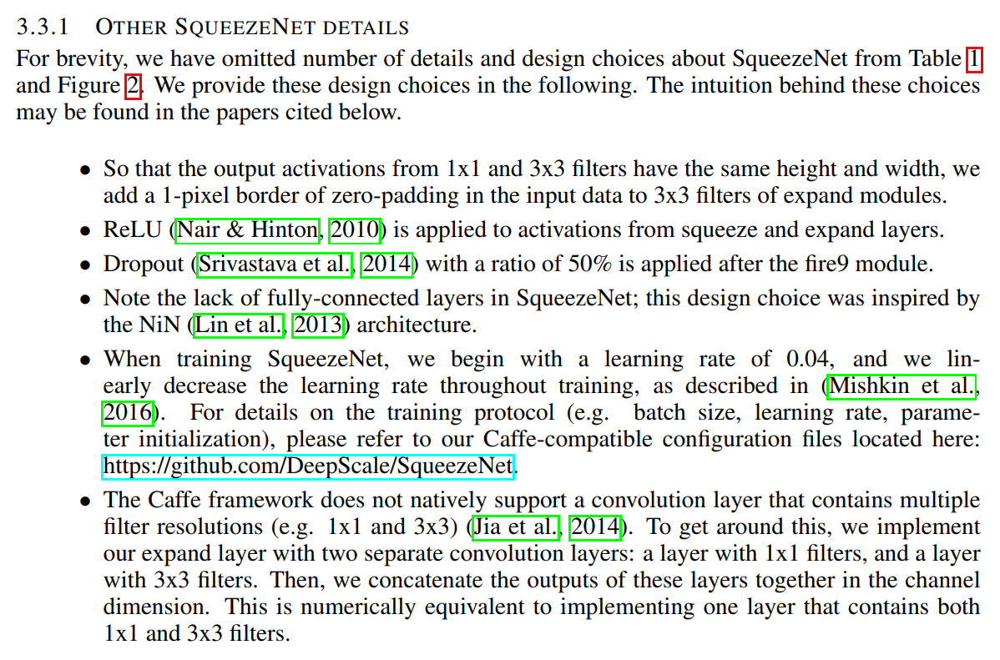
The authors also list several other crucial, nitty-gritty details required to build and train the model successfully:
- Padding: They add a 1-pixel border of zero-padding to the 3x3 filters to ensure their output has the same dimensions as the 1x1 filters, allowing them to be concatenated.
- Activation Function: They use the standard ReLU activation after every squeeze and expand layer.
- Dropout: To prevent overfitting, they apply dropout with a 50% ratio after the
fire9module. - No Fully-Connected Layers: This is a major design choice that saves millions of parameters compared to older models like AlexNet. This idea was inspired by the “Network in Network” paper.
- Training: They provide details on their learning rate schedule and, importantly, link to their GitHub repository with the exact Caffe configuration files, promoting reproducible research.
With the complete recipe for the SqueezeNet architecture now laid out, from the micro-level Fire module to the macro-level network stack, we are finally ready to see the results of their work.
Digging Deeper: Answering Your “But Why?” Questions
As we walk through the design of SqueezeNet, a few key concepts of modern CNNs come up that are worth exploring in more detail. If you’ve ever wondered how channels “grow” inside a network or why certain layers are placed where they are, this section is for you.
Deep Dive A: How Do Channels Grow Beyond the Initial 3 (RGB)?
This is a fantastic and fundamental question. The input image has just 3 channels (Red, Green, and Blue), so how do we end up with layers that have 512 channels?
The magic happens in the convolution layers themselves. The number of filters in a convolution layer determines the number of channels (the “depth”) of its output.
Let’s trace it:
- Input to
conv1: A224x224x**3**image. - Inside
conv1: We apply a set of, say, 96 different filters. Each filter is designed to look for a specific low-level feature (like a vertical edge, a green-to-blue gradient, etc.). Each filter slides over the 3-channel input and produces a single 2D output map showing where it found its feature. - Output of
conv1: When we stack the 96 output maps from our 96 filters, we get a new data volume of size111x111x**96**.
We now have 96 channels! These are no longer “color” channels; they are “feature” channels. The input to the next layer (fire2) will have 96 channels, and its filters will learn to combine these basic edge and color features into more complex patterns. As we go deeper, the spatial dimensions (height/width) shrink, but the channel depth grows, allowing the network to build a richer, more abstract understanding of the image content. This is how SqueezeNet’s Strategy 2 becomes so critical in the deeper layers.
Deep Dive B: The Trade-off: Spatial Size vs. Channel Depth
You’re right to notice that as a CNN processes an image, two things are happening: the channel depth is increasing, while the spatial resolution (height x width) is decreasing. Shouldn’t these two effects cancel each other out?
Not quite. The total volume of activations (H x W x C) often increases dramatically in the early layers. This is because pooling (which reduces spatial size) doesn’t happen at every layer, and the increase in channels is often more aggressive than the decrease in space.
This tension is exactly what Strategy 3 (“Downsample Late”) addresses. The authors make a deliberate choice to prioritize keeping the spatial dimensions (H x W) as large as possible for as long as possible. Why? Because high-resolution feature maps retain more detailed information, which is crucial for achieving high accuracy.
The consequence of this choice is that the activation volumes are massive, which would be computationally unaffordable. This is why Strategies 1 and 2 (the hyper-efficient Fire modules) are not just nice-to-have; they are absolutely essential to make Strategy 3 viable.
Deep Dive C: The Modern Classifier - conv10 Followed by Pooling
Shouldn’t the pooling layer come before the classifier? In older architectures like AlexNet, yes. But SqueezeNet uses a more modern and efficient technique called Global Average Pooling (GAP).
Here’s the flow:
- The
conv10layer is a 1x1 convolution with 1000 filters (one for each ImageNet class). Its output is a13x13x1000volume. Think of this as 1000 “heatmaps,” where each map shows where the network “sees” features corresponding to that class. - The Global Average Pooling layer then takes each of these
13x13heatmaps and calculates its average value, squashing it down to a single number. - The result is a final
1x1x1000vector, ready for the softmax function.
This conv -> GAP structure is vastly superior to the old pool -> flatten -> fully-connected structure because:
- It saves millions of parameters by completely eliminating the massive fully-connected layers. This is a core reason SqueezeNet is so small.
- It’s more interpretable. You can actually look at the heatmaps before the GAP layer to see what parts of the image the network is paying attention to for its classification.
Deep Dive D: Why Use a “Big” 7x7 Filter in a “Small” Network?
It seems counterintuitive: if the whole point of SqueezeNet is to use small filters (Strategy 1), why does it start with a comparatively massive 7x7 filter in its very first layer (conv1)?
This is a deliberate and wise exception to the rule. The first convolution layer has a unique and challenging job that makes a larger filter the better tool.
It Sees Raw Pixels:
conv1is the only layer that processes the raw image. A larger filter has a wider receptive field, meaning it can see a larger patch of pixels at once (a7x7patch vs. a3x3patch). This allows it to capture more meaningful, slightly larger initial patterns like gradients and textures directly from the noisy pixel space.It’s an Efficient Downsampler: The input image is spatially huge (
224x224). The network needs to shrink this down quickly to be computationally manageable. Theconv1layer uses astride of 2, which means it slides the filter by 2 pixels at a time. Combining a large 7x7 filter with a stride of 2 is a very efficient way to perform both feature extraction and downsampling in a single operation.The “Cost” is Deceptively Low: Here’s the most important part. The cost of a filter depends heavily on the number of input channels. The
conv1layer’s 7x7 filter operates on only 3 input channels (RGB). The total parameter cost is just(7 * 7 * 3) * 96 filters = 14,112parameters. This is a drop in the bucket, accounting for only ~1% of SqueezeNet’s total 1.25 million parameters.
In contrast, a “small” 3x3 filter deep in the network might operate on 512 input channels, costing (3 * 3 * 512) * 512 filters = 2,359,296 parameters!
The authors make a calculated trade-off: they “spend” a tiny fraction of their parameter budget on conv1 to get a more effective and efficient start to the network, and then apply their extreme parameter-saving rules in the deeper layers where it truly matters.
The Results - Proof in the Numbers
After meticulously detailing their design philosophy and architecture, the authors dedicate Section 4 to the crucial evaluation. This is where the rubber meets the road. They compare their creation against the reigning champion, AlexNet, and the state-of-the-art in model compression.
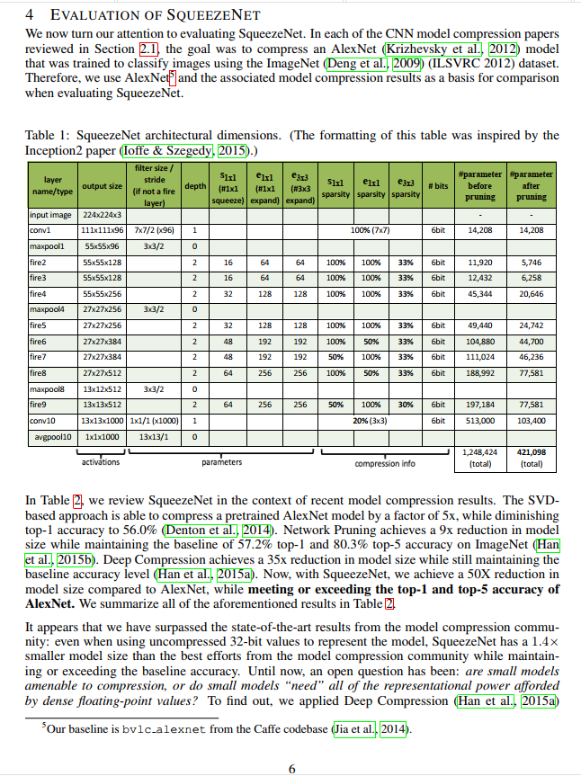
The setup is simple: train the models on the massive ImageNet (ILSVRC 2012) dataset and compare their size and accuracy.
Table 1: The Anatomy of SqueezeNet
Before we get to the final comparison, Table 1 provides a detailed layer-by-layer breakdown of the SqueezeNet architecture. It’s a goldmine of information, but the most important number is at the very bottom right:
Total parameters (before pruning): 1,248,424
Let’s put that in context. AlexNet, the model they are comparing against, has roughly 60 million parameters. Right out of the gate, with no compression tricks at all, the SqueezeNet architecture is ~50 times smaller than AlexNet.
The Main Event: SqueezeNet vs. The World
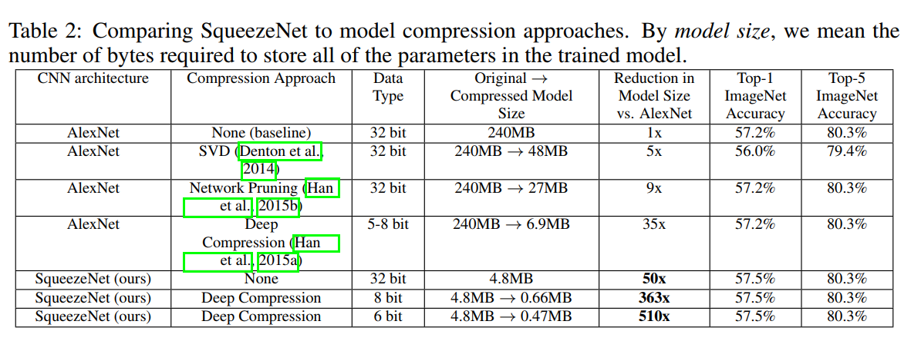
This is the money shot. Table 2 summarizes the entire story of the paper in a few powerful lines. To make it clear, let’s compare the two fundamental approaches to getting a small, accurate model.
Approach A: Compress a Big Model (The Old Way)
This was the state-of-the-art before SqueezeNet. You start with the huge 240MB AlexNet model and use sophisticated tools to shrink it. The best result at the time was from the Deep Compression technique:
- Model: AlexNet + Deep Compression
- Model Size: 6.9 MB (a 35x reduction from the original 240MB)
- Top-5 Accuracy: 80.3%
This was an impressive achievement. A 35x reduction with no loss in accuracy is fantastic. But could we do better?
Approach B: Design a Small Model from Scratch (The SqueezeNet Way)
This is the core hypothesis of the SqueezeNet paper. What if, instead of compressing a bloated model, we just designed a lean, efficient one from the beginning?
- Model: SqueezeNet (uncompressed, using standard 32-bit floats)
- Model Size: 4.8 MB (a 50x reduction)
- Top-5 Accuracy: 80.3%
This result is stunning. The SqueezeNet architecture, by itself, is smaller and just as accurate as the best-compressed version of AlexNet. This proves that intelligent architecture design is a more powerful tool for efficiency than post-hoc compression.
The Knockout Punch: The Best of Both Worlds
The authors then asked a brilliant follow-up question: what happens if we apply the best compression techniques to our already-small model? Are there still more savings to be had?
- Model: SqueezeNet + Deep Compression (with 6-bit quantization)
- Model Size: 0.47 MB (a staggering 510x reduction from AlexNet)
- Top-5 Accuracy: 80.3%
This is the ultimate result. By combining a small, efficient architecture with state-of-the-art compression, the authors achieved a model that is over 500 times smaller than the original industry standard, without sacrificing a single drop of accuracy. They proved that these two approaches are not competing, but complementary.
This section validates every design choice we’ve discussed. The three strategies, the Fire module, and the macro-architecture all come together to produce a model that fundamentally changed how researchers think about the trade-off between size and performance.
Going Deeper - Scientific Experiments on SqueezeNet’s Design
The SqueezeNet authors didn’t just want to present a new model; they wanted to understand the principles that made it work. In Sections 5 and 6, they go back and systematically test their own design choices. This “Design Space Exploration” is one of the most valuable parts of the paper, offering timeless lessons for anyone building a CNN.
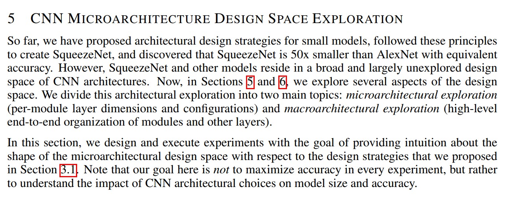
First, they tackle the microarchitecture—the internal guts of the Fire module. They ask: What happens if we tweak the knobs of the Fire module? Are our original design choices actually optimal?
To make this exploration manageable, they first introduce a brilliant simplification. Instead of tweaking the 24 individual hyperparameters of the 8 Fire modules, they define a few high-level “metaparameters” that control the whole network’s structure.
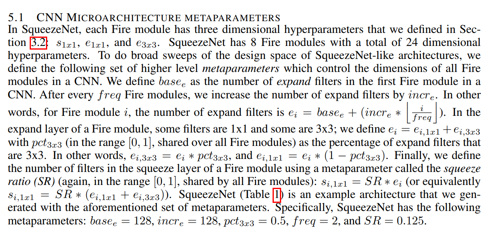
These master controls include: * The Squeeze Ratio (SR): Controls the tightness of the bottleneck. * The pct_3x3: Controls the percentage of 3x3 filters in the expand layer. * Other knobs to control the growth of filters through the network (base_e, incr_e, etc.).
With this simpler set of controls, they can now run principled A/B tests.
Experiment 1: How Much Should We “Squeeze”?
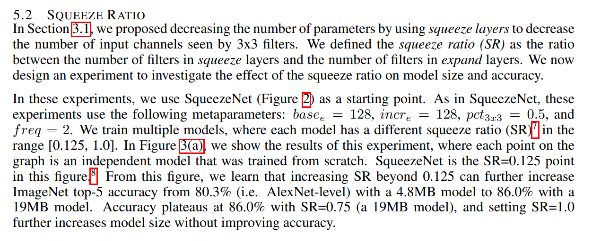
The first experiment investigates Strategy #2 by testing the Squeeze Ratio (SR). This ratio determines the size of the bottleneck in the Fire modules. A small SR (like SqueezeNet’s 0.125) means a very tight bottleneck, while a large SR (like 1.0) means no bottleneck at all.
The Findings (as seen in Figure 3a): The results revealed a clear and important trade-off:
- More Parameters = More Accuracy (to a point): As they increased the Squeeze Ratio from 0.125, the model size grew, but so did the accuracy. The original 4.8MB SqueezeNet achieved 80.3% accuracy, but a larger 19MB version with a looser bottleneck (
SR=0.75) reached a much higher accuracy of 86.0%. - A Point of Diminishing Returns: After
SR=0.75, the accuracy completely plateaued. Making the model even bigger by removing the bottleneck entirely (SR=1.0) offered no extra performance boost.
The Lesson: The Squeeze Ratio is a powerful tuning knob for balancing size and accuracy. If your primary goal is the absolute smallest model that hits a certain target (like AlexNet), a tight bottleneck is best. But if you have a bit more memory to spare, you can significantly boost accuracy by loosening that bottleneck.
Experiment 2: What’s the Right Mix of 1x1 and 3x3 Filters?
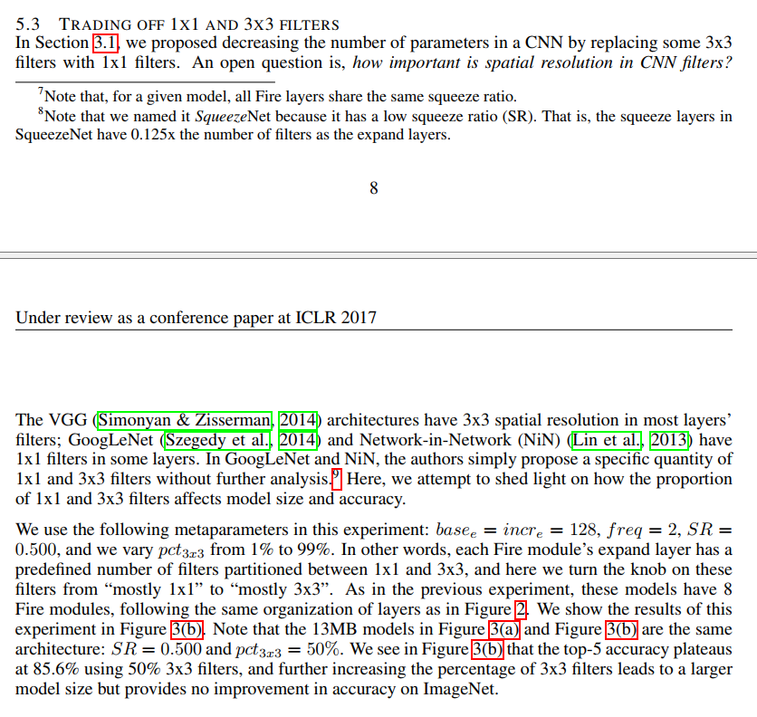
The second experiment investigates Strategy #1 by testing the ideal percentage of 3x3 filters (pct_3x3) in the expand layer. Remember, 1x1 filters are cheap, while 3x3 filters are expensive but are needed to see spatial patterns.
The Findings (as seen in Figure 3b): The results were once again clear and insightful:
- More 3x3s = Bigger Model: Unsurprisingly, as the percentage of expensive 3x3 filters increased, the overall model size grew.
- Accuracy Peaks at a 50/50 Split: The model’s accuracy peaked at 85.6% when the expand layer’s filters were split 50% 3x3 and 50% 1x1.
- Diminishing Returns (Again): Increasing the percentage of 3x3 filters beyond 50% made the model much larger but gave zero improvement in accuracy.
The Lesson: You don’t need to overload your network with expensive, spatially-aware 3x3 filters. A balanced 50/50 diet of cheap 1x1 filters and expensive 3x3 filters provides the best bang for your buck, delivering peak accuracy without wasting parameters.
These microarchitecture experiments are a masterclass in principled design. They not only validate the choices made for the original SqueezeNet but also provide invaluable, general-purpose rules of thumb for anyone designing an efficient CNN.
Macro-Level Tweaks - Can We Make SqueezeNet Even Better with ResNet’s Superpower?
Having fine-tuned the internals of the Fire module, the authors turned their attention to the macroarchitecture—the high-level wiring of the entire network.
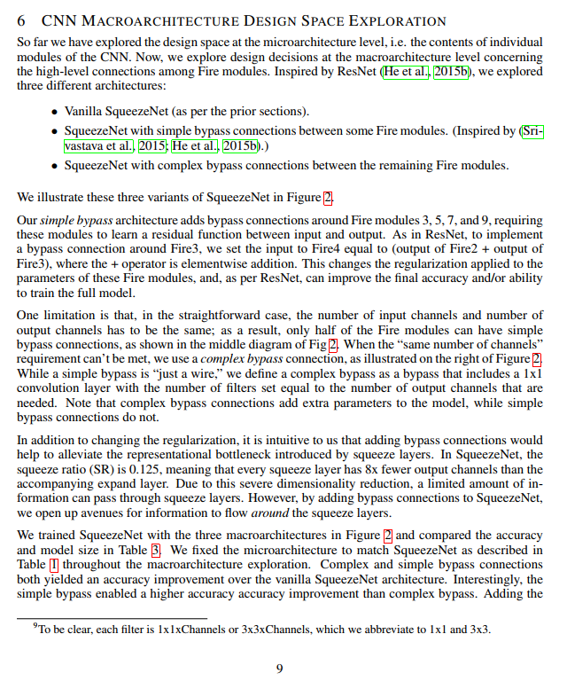
At the time, the hottest new idea in CNN design was the “bypass” or “skip” connection from the ResNet paper. These connections allow information to skip over layers, which was shown to help train deeper networks and improve accuracy. The SqueezeNet team wisely decided to see if this powerful idea could benefit their architecture.
They set up a fascinating A/B/C test, comparing three different versions of their network:
- Vanilla SqueezeNet: The original, purely sequential model.
- SqueezeNet with Simple Bypass: A version with parameter-free skip connections added wherever possible.
- SqueezeNet with Complex Bypass: A version where the skip connections themselves have a 1x1 convolution, allowing them to be used more broadly.
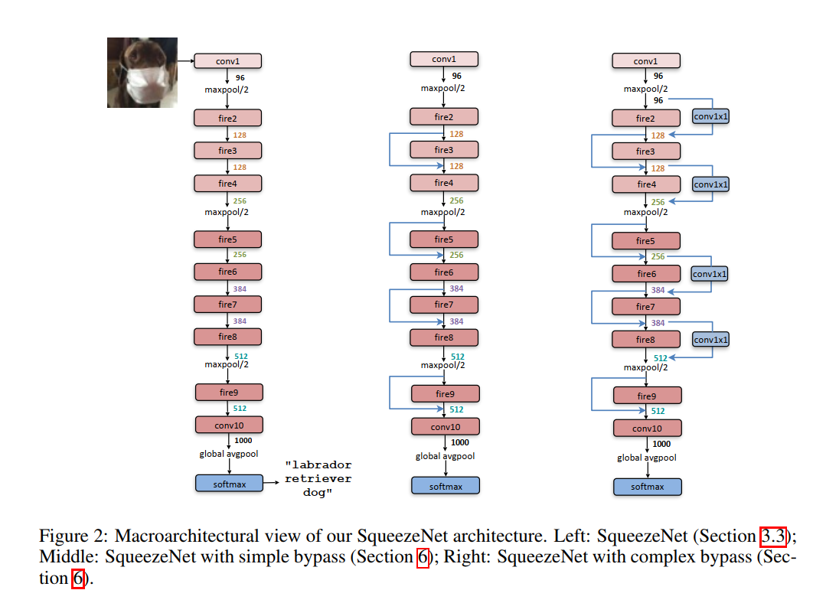
Why Bypass Connections Are a Great Idea for SqueezeNet
The authors had two strong reasons to believe this would work:
- The ResNet Reason: Just like in ResNet, skip connections could help with gradient flow and enable the layers to learn “residual” functions, potentially boosting overall accuracy.
- The SqueezeNet-Specific Reason: This is the most brilliant insight. The original SqueezeNet has a very aggressive
squeezelayer that acts as an information bottleneck (reducing channels by 8x). A bypass connection creates an information superhighway that allows data to flow around this bottleneck. This could preserve important features that might otherwise be lost in the squeeze, leading to a smarter, more accurate model.
The Surprising Results
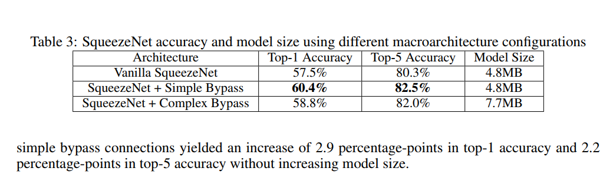
The results from this experiment, summarized in Table 3, were both exciting and surprising:
- Vanilla SqueezeNet (Baseline):
- Top-1 Accuracy: 57.5%
- Model Size: 4.8MB
- SqueezeNet + Complex Bypass:
- Top-1 Accuracy: 58.8% (A nice improvement!)
- Model Size: 7.7MB (But it got bigger.) The extra 1x1 convolutions in the bypass paths added nearly 3MB to the model.
- SqueezeNet + Simple Bypass:
- Top-1 Accuracy: 60.4% (An even BIGGER improvement!)
- Model Size: 4.8MB (And it’s FREE!)
This is a fantastic result. The simpler, parameter-free bypass connections gave a larger accuracy boost than the more complex ones, and they did it without adding a single byte to the model’s size. They provided a nearly 3 percentage point jump in Top-1 accuracy for free.
The Lesson: This experiment provides a clear and powerful recipe for an improved “SqueezeNet v2.” The core architecture is great, but it becomes even better when you augment it with simple bypass connections. This discovery showcases the power of combining architectural ideas (SqueezeNet’s efficiency + ResNet’s connectivity) to achieve results that are better than the sum of their parts.
With these experiments complete, the authors have not only given us a great model but have also armed us with the knowledge and intuition to adapt and improve upon it.
The Legacy of SqueezeNet - Small is the New Big
We’ve journeyed through the entire SqueezeNet paper, from its core motivations to its clever design, stunning results, and insightful experiments. Now, let’s tie it all together and reflect on the paper’s lasting impact.
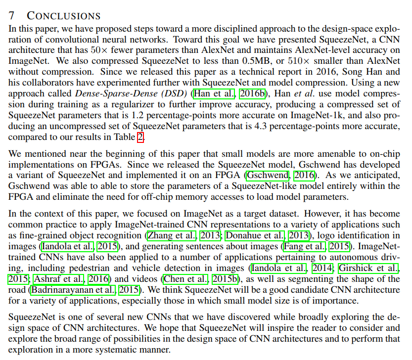
A Summary of Achievements
The SqueezeNet paper is a masterclass in efficient deep learning. Its contributions can be summed up in a few key points:
- A New Philosophy: It championed a shift from the “bigger is better” mindset to a focus on architectural efficiency. It proved that intelligent design could be more effective than brute-force compression.
- A Powerful Architecture: It delivered a concrete model, SqueezeNet, that achieved AlexNet-level accuracy with 50x fewer parameters.
- The Best of Both Worlds: It showed that architecture and compression are complementary, combining them to create a final model that was 510x smaller than its predecessor, at under 0.5MB.
- Actionable Design Principles: Through its systematic “Design Space Exploration,” it gave us invaluable rules of thumb, like the effectiveness of a 50/50 mix of 1x1 and 3x3 filters and the “free” accuracy boost from simple bypass connections.
Real-World Impact and Follow-Up Work
The conclusion of the paper also highlights how SqueezeNet’s ideas immediately began to bear fruit in the real world:
- On-Device Deployment: The authors’ dream of running models on resource-constrained hardware was realized almost immediately. They note that another researcher successfully implemented SqueezeNet on an FPGA, fitting the entire model into the chip’s fast on-board memory—a huge win for embedded AI.
- A Foundation for Future Research: The paper also points to exciting follow-up work, like Dense-Sparse-Dense (DSD) training, which used SqueezeNet as a foundation and managed to make it both smaller AND more accurate. This shows that SqueezeNet wasn’t just a one-off trick, but a robust platform for future innovation.
The Final Takeaway
SqueezeNet is more than just a single, clever architecture. It is a compelling demonstration of a more disciplined, scientific approach to neural network design. The authors didn’t just give us a fish; they taught us how to fish by providing the principles and the methodology to explore the vast universe of possible network designs.
The final paragraph of the paper says it best:
“We hope that SqueezeNet will inspire the reader to consider and explore the broad range of possibilities in the design space of CNN architectures and to perform that exploration in a more systematic manner.”
And it did. The ideas pioneered in SqueezeNet—the aggressive use of 1x1 convolutions, the squeeze-and-expand bottleneck design, and the focus on parameter efficiency—are now standard practice. They live on in the DNA of modern, highly efficient architectures like MobileNet and ShuffleNet, which power countless AI applications on the phones in our pockets and the smart devices in our homes.
SqueezeNet taught the world a valuable lesson: with thoughtful design, small can be incredibly powerful.
Final Thoughts
This concludes our deep dive into the SqueezeNet paper. I hope this step-by-step breakdown has given you a clear understanding of its core concepts and a deeper appreciation for its impact on the field of artificial intelligence. Thanks for studying along.